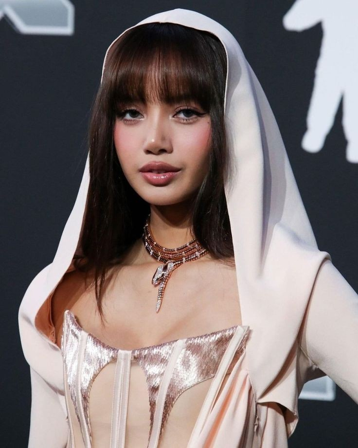
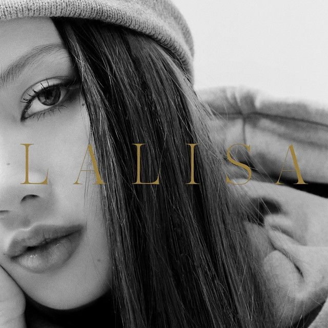
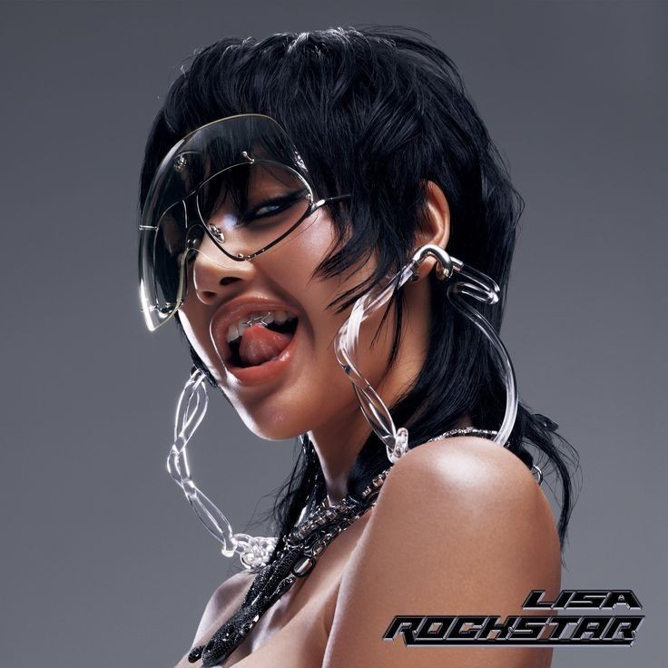
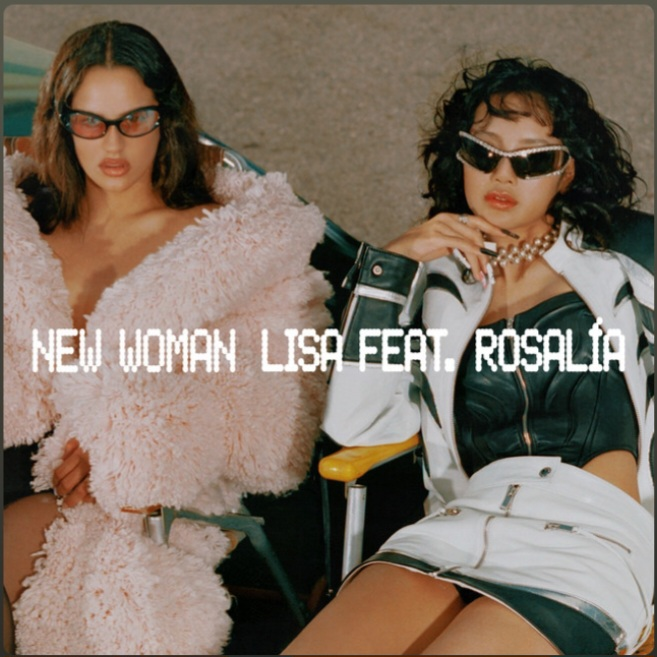

Lalisa, mais conhecida como Lisa, , é uma rapper, cantora e dançarina tailandesa.
Ela é integrante do girl group sul-coreano blackpink , que estreou pela YG Entertainment em agosto de 2016, com a musica ´boombayah´
suas primeiras musicas solos foram do single ´lalisa´ com as musicas ´lalisa´ e ´money´
musicas solos
lalisa
 rockstar  new woman (feat. rosalía)  moonlit floor